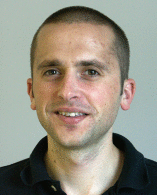
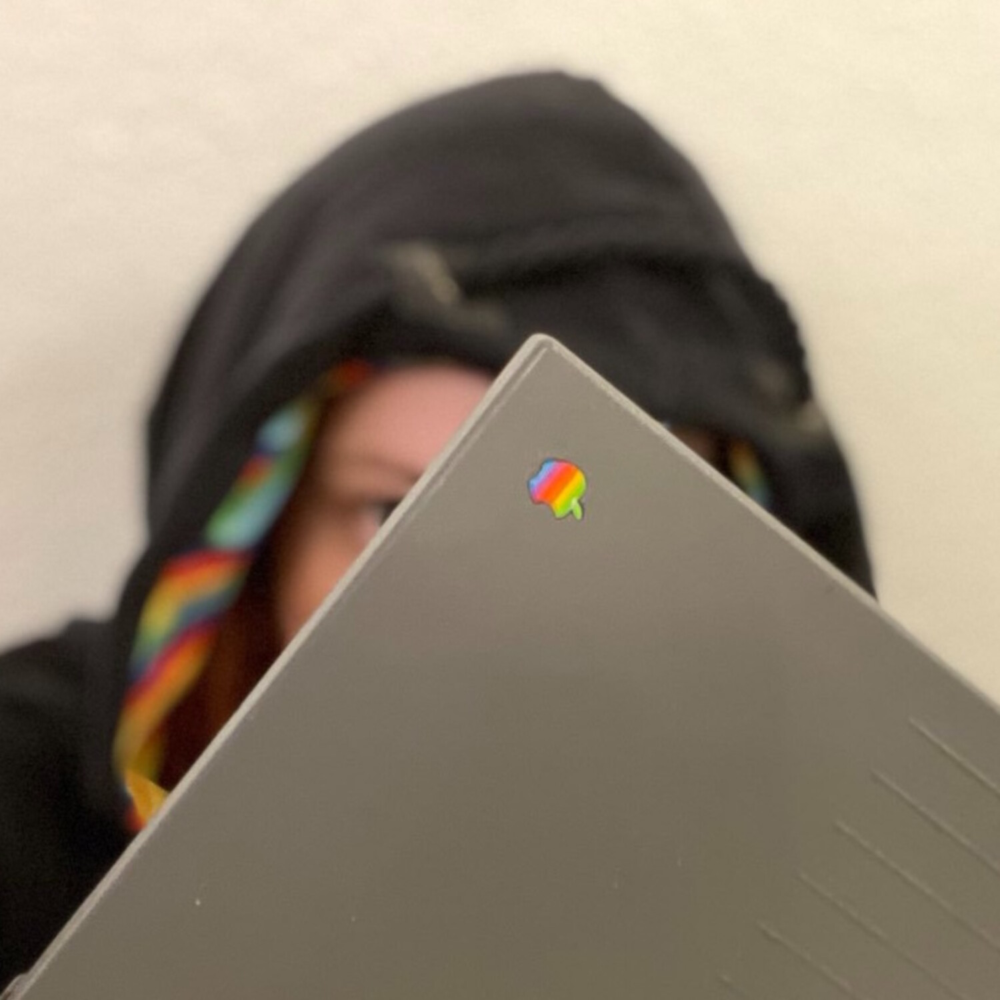

Keynote 1
Abstractions and tooling for leakage evaluation
Speaker: Dan Page
Abstract
We have an ongoing project [1] relating generally to support for cryptography on RISC-V. A lot of the work we've done involves thinking about what the (or any) ISA could or should look like, given that it represents the abstraction layer pertinent to most cryptographic implementation tasks; examples include ISEs for AES [2], a leakage oriented fence instruction [3], and ISEs for masking [4].
Having done that sort of work, we started to consider abstractions for doing leakage evaluation: we collectively have mature hardware and software tools to do so of course, but, for certain use-cases and users, actually applying them arguably demands a focus at too low a level. So, in part aiming to support studies such as [5], we started to develop some tooling for high-level leakage evaluation tasks (see, e.g., [6], and, more specifically, [7]). Conveniently, this also offers a route to exposing our ISA-related work to users without demanding, e.g., they own equipment such as a (specific) FPGA.
Other view points are possible of course, but this talk will aim to explain our motivation and outline associated progress. In part it will act as an advert: we expect the tools are, or at least could be more widely interesting and useful.
- [1] https://www.scarv.org
- [2] https://tches.iacr.org/index.php/TCHES/article/view/8729
- [3] https://tches.iacr.org/index.php/TCHES/article/view/8545
- [4] https://tches.iacr.org/index.php/TCHES/article/view/9067, https://eprint.iacr.org/2021/1416.pdf
- [5] https://tches.iacr.org/index.php/TCHES/article/view/9294
- [6] https://github.com/scarv
- [7] https://github.com/scarv/sca3s
Short Bio
Daniel Page is currently a Lecturer within the Department of Computer Science, University of Bristol. His research focuses on challenges in cryptographic engineering, the implementation (in hardware and/or software) of and also implementation attacks (relating to both side-channel and fault attacks) on cryptographic primitives and arithmetic in particular.

Keynote 2
Repurposing Wireless Stacks for In-Depth Security Analysis
Speaker: Jiska Classen
Abstract
Modern wireless stacks become increasingly complex. Even though they are partially standardized and documented, major parts like vendor-specific protocols and implementation details remain unknown to the public. Complexity of wireless stacks leads to reduced compatibility between vendors (e.g., AirDrop only working between Apple devices) as well as unknown security properties (e.g., if and how protocols were tested against attacks).
Existing wireless stacks can be instrumented and modified. This way, researchers can explore implementations and analyze wireless ecosystems as a whole, despite being complex and closed-source. In this talk, we will demonstrate practical tools and discovered vulnerabilities. Tune in for a couple of recent demos, such as modifying Bluetooth firmware, using Bluetooth to gain code execution within Wi-Fi chips, shortening ultra-wideband distance measurements, and playing custom sounds on AirTags.
Short Bio
Dr.Ing. Jiska Classen is a security researcher at the Secure Mobile Networking Lab at TU Darmstadt. Her main interest are weird wireless stacks including mobile devices.
